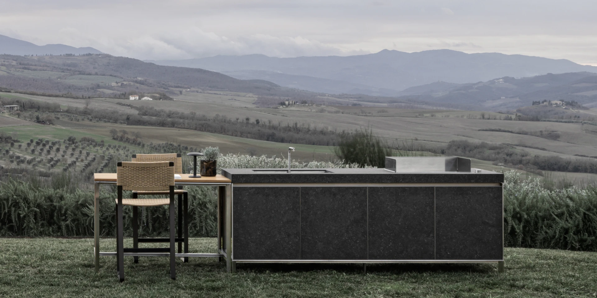
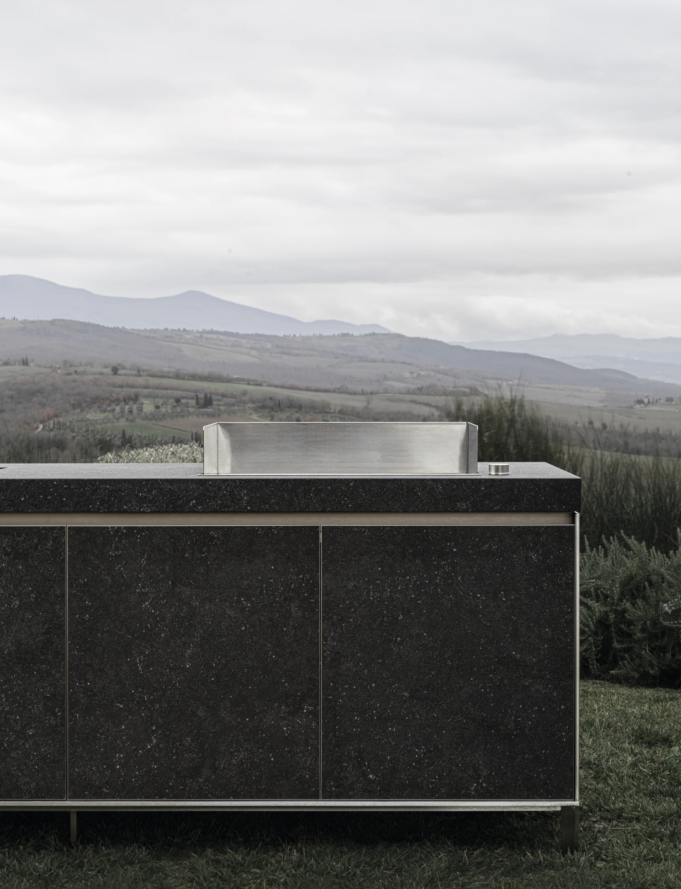
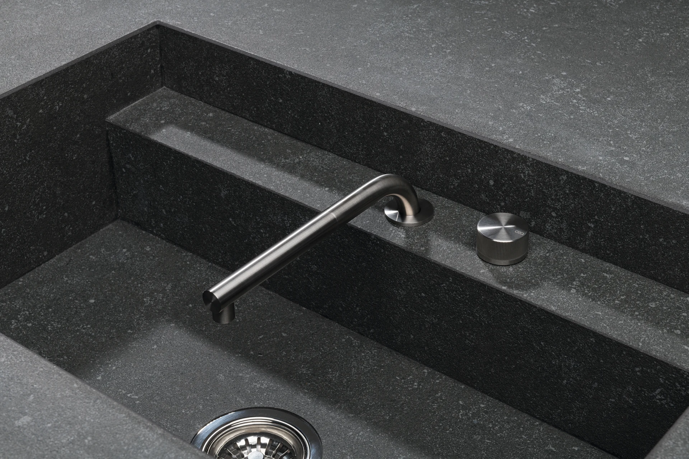
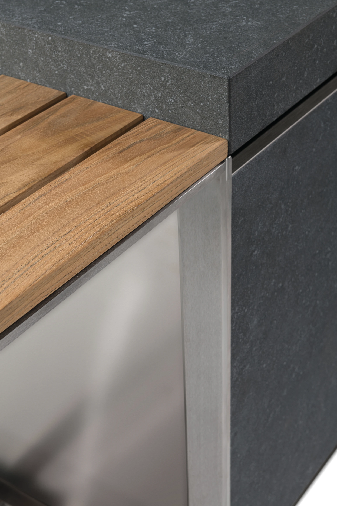
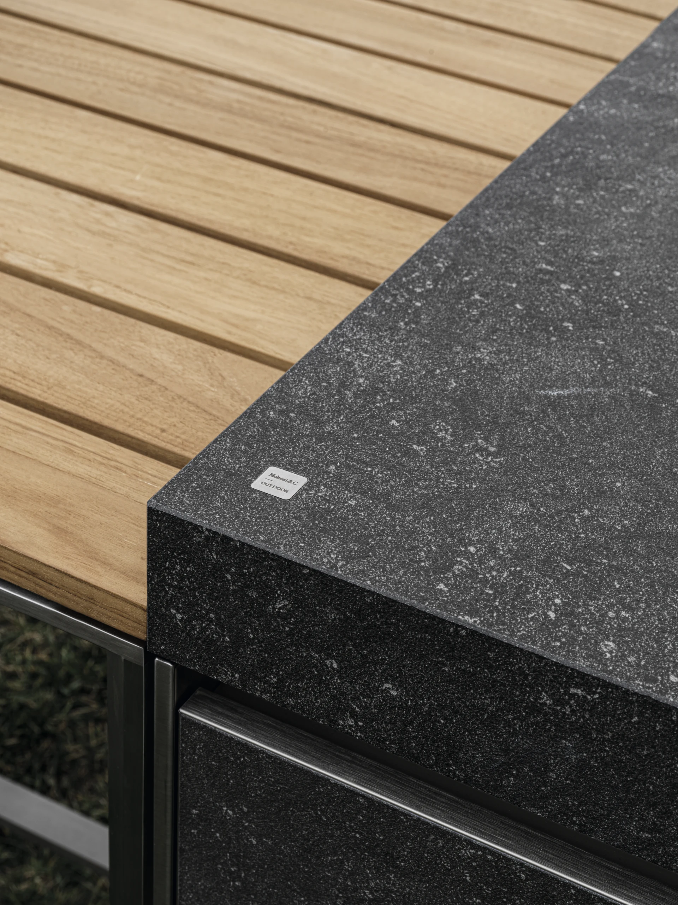
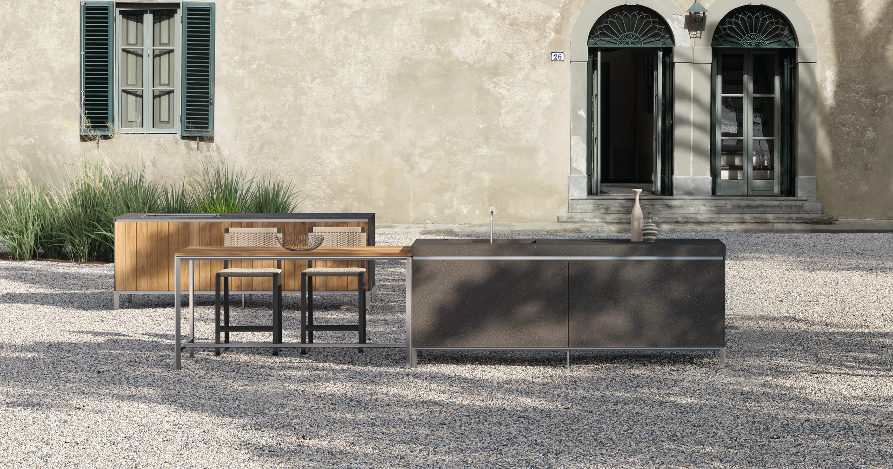

Helios
Кухня для улицы — терраса, сад, летняя кухня.
Helios
Кухня для улицы — терраса, сад, летняя кухня.
Дизайн: Vincent Van Duysen

Уличная кухня Helios Vincent Van Duysen сочетает утончённый дизайн с продвинутой функциональностью для современной жизни на открытом воздухе. Благодаря чётким, дисциплинированным линиям и монолитному присутствию Helios дополняет коллекции Molteni&C Landmark и Timeout, создавая гармоничный ансамбль уличной мебели. Сдержанная элегантность делает её центром притяжения для террас и садов.

Созданная для индивидуализации, Helios предлагает богатый выбор отделок, напоминающих текстуры и цвета природных материалов. Поверхности передают тактильную теплоту тика, основательность натурального камня или современную ясность стали, а керамогранит MDi by Inalco добавляет тонкую глубину и вариативность. Это разнообразие позволяет кухне органично вписываться в разные уличные пространства.

Благодаря продуманным пропорциям, впечатляющему присутствию и тщательно подобранным отделкам, уличная кухня Helios поднимает опыт жизни на свежем воздухе на новый уровень, предлагая практичную и стильную площадку для готовки, застолий и общения на улице (источник: molteni.it).

- Материалы: тик, натуральный камень, сталь, керамогранит MDi by Inalco
- Часть ансамбля с коллекциями Landmark и Timeout


Vincent Van Duysen
Бельгийский архитектор, креативный директор Molteni&C с 2016 года. Известен строгим, почти монашеским минимализмом и вниманием к материалам в их естественном, необработанном выражении.
Обсудить проект
из коллекции Helios
Персональная консультация по конфигурации и материалам.